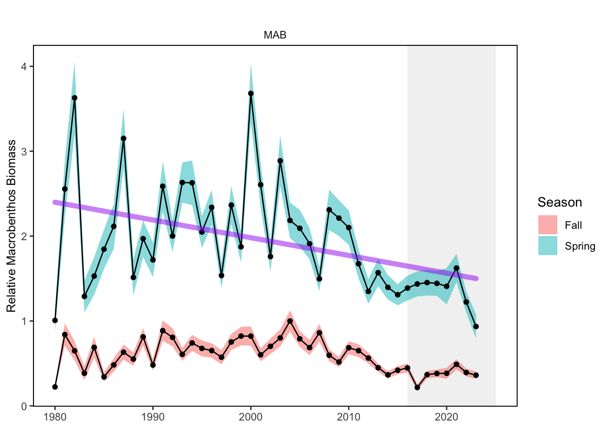

SMART Indicator Report: Benthic Invertebrate Indices
1 Descriptive Section
1.2 Indicator name
Benthic Invertebrate Indices
Includes variable(s): Fall Macrobenthos Biomass Index Estimate, Fall Macrobenthos Biomass Index Estimate SE, Fall Macrobenthos Eastward Center of Gravity, Fall Macrobenthos Eastward Center of Gravity SE, Fall Macrobenthos Northward Center of Gravity, Fall Macrobenthos Northward Center of Gravity SE, Fall Megabenthos Biomass Index Estimate, Fall Megabenthos Biomass Index Estimate SE, Fall Megabenthos Eastward Center of Gravity, Fall Megabenthos Eastward Center of Gravity SE, Fall Megabenthos Northward Center of Gravity, Fall Megabenthos Northward Center of Gravity SE, Spring Macrobenthos Biomass Index Estimate, Spring Macrobenthos Biomass Index Estimate SE, Spring Macrobenthos Eastward Center of Gravity, Spring Macrobenthos Eastward Center of Gravity SE, Spring Macrobenthos Northward Center of Gravity, Spring Macrobenthos Northward Center of Gravity SE, Spring Megabenthos Biomass Index Estimate, Spring Megabenthos Biomass Index Estimate SE, Spring Megabenthos Eastward Center of Gravity, Spring Megabenthos Eastward Center of Gravity SE, Spring Megabenthos Northward Center of Gravity, Spring Megabenthos Northward Center of Gravity SE
1.3 Indicator brief description
Aggregate macrobenthos and megabenthos invertebrate indices from fish stomach contents
1.4 Indicator visualization
Time series extend from 1980-2023. Macrobenthos and Megabenthos are included on separate plots for each EPU. Variables plotted are Fall Macrobenthos or Megabenthos Biomass Estimate and Spring Macrobenthos or Megabenthos Biomass Estimate with error bands from Fall Macrobenthos or Megabenthos Biomass Estimate SE and Spring Macrobenthos or Megabenthos Biomass Estimate SE, respectively. Eastward and Northward components of the Center of Gravity, along with the Center of Gravity SE are plotted for Fall and Spring Macrobenthos or Megabenthos Biomass.


2 SMART Attribute Section
2.1 Indicator documentation
2.1.1 Are indicators available for others to use (data downloadable)?
Yes
2.1.1.1 Where can indicators be found?
Data: https://noaa-edab.github.io/ecodata/index.html
Description: https://noaa-edab.github.io/catalog/benthos_index.html
Technical documentation: https://noaa-edab.github.io/tech-doc/benthos_index.html
2.1.1.2 How often are they updated? Are future updates likely?
[need sequential look at datasets for update frequency. Future requires judgement]
2.1.1.3 Who is the contact?
Sarah Gaichas (Sarah.Gaichas@noaa.gov)
2.1.2 Gather indicator statistics
2.1.2.1 Units
Indicator | Units |
|---|---|
Fall Macrobenthos Biomass Index Estimate | relative grams per stomach |
Fall Macrobenthos Biomass Index Estimate SE | relative grams per stomach |
Fall Macrobenthos Eastward Center of Gravity | km |
Fall Macrobenthos Eastward Center of Gravity SE | km |
Fall Macrobenthos Northward Center of Gravity | km |
Fall Macrobenthos Northward Center of Gravity SE | km |
Fall Megabenthos Biomass Index Estimate | relative grams per stomach |
Fall Megabenthos Biomass Index Estimate SE | relative grams per stomach |
Fall Megabenthos Eastward Center of Gravity | km |
Fall Megabenthos Eastward Center of Gravity SE | km |
Fall Megabenthos Northward Center of Gravity | km |
Fall Megabenthos Northward Center of Gravity SE | km |
Spring Macrobenthos Biomass Index Estimate | relative grams per stomach |
Spring Macrobenthos Biomass Index Estimate SE | relative grams per stomach |
Spring Macrobenthos Eastward Center of Gravity | km |
Spring Macrobenthos Eastward Center of Gravity SE | km |
Spring Macrobenthos Northward Center of Gravity | km |
Spring Macrobenthos Northward Center of Gravity SE | km |
Spring Megabenthos Biomass Index Estimate | relative grams per stomach |
Spring Megabenthos Biomass Index Estimate SE | relative grams per stomach |
Spring Megabenthos Eastward Center of Gravity | km |
Spring Megabenthos Eastward Center of Gravity SE | km |
Spring Megabenthos Northward Center of Gravity | km |
Spring Megabenthos Northward Center of Gravity SE | km |
2.1.2.2 Length of time series, start and end date, periodicity
General overview: Spring (January-June), Fall (July-December)
Indicator specifics:
Indicator | EPU | StartYear | EndYear | NumYears | MissingYears |
|---|---|---|---|---|---|
Fall Macrobenthos Biomass Index Estimate | AllEPU | 1980 | 2023 | 44 | 0 |
Fall Macrobenthos Biomass Index Estimate | GB | 1980 | 2023 | 44 | 0 |
Fall Macrobenthos Biomass Index Estimate | GOM | 1980 | 2023 | 44 | 0 |
Fall Macrobenthos Biomass Index Estimate | MAB | 1980 | 2023 | 44 | 0 |
Fall Macrobenthos Biomass Index Estimate SE | AllEPU | 1980 | 2023 | 44 | 0 |
Fall Macrobenthos Biomass Index Estimate SE | GB | 1980 | 2023 | 44 | 0 |
Fall Macrobenthos Biomass Index Estimate SE | GOM | 1980 | 2023 | 44 | 0 |
Fall Macrobenthos Biomass Index Estimate SE | MAB | 1980 | 2023 | 44 | 0 |
Fall Macrobenthos Eastward Center of Gravity | ALLEPU | 1980 | 2023 | 44 | 0 |
Fall Macrobenthos Eastward Center of Gravity SE | ALLEPU | 1980 | 2023 | 44 | 0 |
Fall Macrobenthos Northward Center of Gravity | ALLEPU | 1980 | 2023 | 44 | 0 |
Fall Macrobenthos Northward Center of Gravity SE | ALLEPU | 1980 | 2023 | 44 | 0 |
Fall Megabenthos Biomass Index Estimate | AllEPU | 1980 | 2023 | 44 | 0 |
Fall Megabenthos Biomass Index Estimate | GB | 1980 | 2023 | 44 | 0 |
Fall Megabenthos Biomass Index Estimate | GOM | 1980 | 2023 | 44 | 0 |
Fall Megabenthos Biomass Index Estimate | MAB | 1980 | 2023 | 44 | 0 |
Fall Megabenthos Biomass Index Estimate SE | AllEPU | 1980 | 2023 | 44 | 0 |
Fall Megabenthos Biomass Index Estimate SE | GB | 1980 | 2023 | 44 | 0 |
Fall Megabenthos Biomass Index Estimate SE | GOM | 1980 | 2023 | 44 | 0 |
Fall Megabenthos Biomass Index Estimate SE | MAB | 1980 | 2023 | 44 | 0 |
Fall Megabenthos Eastward Center of Gravity | ALLEPU | 1980 | 2023 | 44 | 0 |
Fall Megabenthos Eastward Center of Gravity SE | ALLEPU | 1980 | 2023 | 44 | 0 |
Fall Megabenthos Northward Center of Gravity | ALLEPU | 1980 | 2023 | 44 | 0 |
Fall Megabenthos Northward Center of Gravity SE | ALLEPU | 1980 | 2023 | 44 | 0 |
Spring Macrobenthos Biomass Index Estimate | AllEPU | 1980 | 2023 | 44 | 0 |
Spring Macrobenthos Biomass Index Estimate | GB | 1980 | 2023 | 44 | 0 |
Spring Macrobenthos Biomass Index Estimate | GOM | 1980 | 2023 | 44 | 0 |
Spring Macrobenthos Biomass Index Estimate | MAB | 1980 | 2023 | 44 | 0 |
Spring Macrobenthos Biomass Index Estimate SE | AllEPU | 1980 | 2023 | 44 | 0 |
Spring Macrobenthos Biomass Index Estimate SE | GB | 1980 | 2023 | 44 | 0 |
Spring Macrobenthos Biomass Index Estimate SE | GOM | 1980 | 2023 | 44 | 0 |
Spring Macrobenthos Biomass Index Estimate SE | MAB | 1980 | 2023 | 44 | 0 |
Spring Macrobenthos Eastward Center of Gravity | ALLEPU | 1980 | 2023 | 44 | 0 |
Spring Macrobenthos Eastward Center of Gravity SE | ALLEPU | 1980 | 2023 | 44 | 0 |
Spring Macrobenthos Northward Center of Gravity | ALLEPU | 1980 | 2023 | 44 | 0 |
Spring Macrobenthos Northward Center of Gravity SE | ALLEPU | 1980 | 2023 | 44 | 0 |
Spring Megabenthos Biomass Index Estimate | AllEPU | 1980 | 2023 | 44 | 0 |
Spring Megabenthos Biomass Index Estimate | GB | 1980 | 2023 | 44 | 0 |
Spring Megabenthos Biomass Index Estimate | GOM | 1980 | 2023 | 44 | 0 |
Spring Megabenthos Biomass Index Estimate | MAB | 1980 | 2023 | 44 | 0 |
Spring Megabenthos Biomass Index Estimate SE | AllEPU | 1980 | 2023 | 44 | 0 |
Spring Megabenthos Biomass Index Estimate SE | GB | 1980 | 2023 | 44 | 0 |
Spring Megabenthos Biomass Index Estimate SE | GOM | 1980 | 2023 | 44 | 0 |
Spring Megabenthos Biomass Index Estimate SE | MAB | 1980 | 2023 | 44 | 0 |
Spring Megabenthos Eastward Center of Gravity | ALLEPU | 1980 | 2023 | 44 | 0 |
Spring Megabenthos Eastward Center of Gravity SE | ALLEPU | 1980 | 2023 | 44 | 0 |
Spring Megabenthos Northward Center of Gravity | ALLEPU | 1980 | 2023 | 44 | 0 |
Spring Megabenthos Northward Center of Gravity SE | ALLEPU | 1980 | 2023 | 44 | 0 |
2.1.2.3 Spatial location, scale and extent
General overview: by EPU and full shelf
Indicator specifics:
Indicator | EPU |
|---|---|
Fall Macrobenthos Biomass Index Estimate | AllEPU |
Fall Macrobenthos Biomass Index Estimate | GB |
Fall Macrobenthos Biomass Index Estimate | GOM |
Fall Macrobenthos Biomass Index Estimate | MAB |
Fall Macrobenthos Biomass Index Estimate SE | AllEPU |
Fall Macrobenthos Biomass Index Estimate SE | GB |
Fall Macrobenthos Biomass Index Estimate SE | GOM |
Fall Macrobenthos Biomass Index Estimate SE | MAB |
Fall Macrobenthos Eastward Center of Gravity | ALLEPU |
Fall Macrobenthos Eastward Center of Gravity SE | ALLEPU |
Fall Macrobenthos Northward Center of Gravity | ALLEPU |
Fall Macrobenthos Northward Center of Gravity SE | ALLEPU |
Fall Megabenthos Biomass Index Estimate | AllEPU |
Fall Megabenthos Biomass Index Estimate | GB |
Fall Megabenthos Biomass Index Estimate | GOM |
Fall Megabenthos Biomass Index Estimate | MAB |
Fall Megabenthos Biomass Index Estimate SE | AllEPU |
Fall Megabenthos Biomass Index Estimate SE | GB |
Fall Megabenthos Biomass Index Estimate SE | GOM |
Fall Megabenthos Biomass Index Estimate SE | MAB |
Fall Megabenthos Eastward Center of Gravity | ALLEPU |
Fall Megabenthos Eastward Center of Gravity SE | ALLEPU |
Fall Megabenthos Northward Center of Gravity | ALLEPU |
Fall Megabenthos Northward Center of Gravity SE | ALLEPU |
Spring Macrobenthos Biomass Index Estimate | AllEPU |
Spring Macrobenthos Biomass Index Estimate | GB |
Spring Macrobenthos Biomass Index Estimate | GOM |
Spring Macrobenthos Biomass Index Estimate | MAB |
Spring Macrobenthos Biomass Index Estimate SE | AllEPU |
Spring Macrobenthos Biomass Index Estimate SE | GB |
Spring Macrobenthos Biomass Index Estimate SE | GOM |
Spring Macrobenthos Biomass Index Estimate SE | MAB |
Spring Macrobenthos Eastward Center of Gravity | ALLEPU |
Spring Macrobenthos Eastward Center of Gravity SE | ALLEPU |
Spring Macrobenthos Northward Center of Gravity | ALLEPU |
Spring Macrobenthos Northward Center of Gravity SE | ALLEPU |
Spring Megabenthos Biomass Index Estimate | AllEPU |
Spring Megabenthos Biomass Index Estimate | GB |
Spring Megabenthos Biomass Index Estimate | GOM |
Spring Megabenthos Biomass Index Estimate | MAB |
Spring Megabenthos Biomass Index Estimate SE | AllEPU |
Spring Megabenthos Biomass Index Estimate SE | GB |
Spring Megabenthos Biomass Index Estimate SE | GOM |
Spring Megabenthos Biomass Index Estimate SE | MAB |
Spring Megabenthos Eastward Center of Gravity | ALLEPU |
Spring Megabenthos Eastward Center of Gravity SE | ALLEPU |
Spring Megabenthos Northward Center of Gravity | ALLEPU |
Spring Megabenthos Northward Center of Gravity SE | ALLEPU |
2.1.2.4 Management scale: all species, FMP level, species level, can it be aggregated or separated to different scales?
[Classify by hand, note gridded data if available could be applied to different species ranges]
2.1.2.5 Uncertainty metrics
Uncertainty is captured in these variables:
[1] “Fall Macrobenthos Biomass Index Estimate SE” “Fall Macrobenthos Eastward Center of Gravity SE”
[3] “Fall Macrobenthos Northward Center of Gravity SE” “Fall Megabenthos Biomass Index Estimate SE”
[5] “Fall Megabenthos Eastward Center of Gravity SE” “Fall Megabenthos Northward Center of Gravity SE”
[7] “Spring Macrobenthos Biomass Index Estimate SE” “Spring Macrobenthos Eastward Center of Gravity SE”
[9] “Spring Macrobenthos Northward Center of Gravity SE” “Spring Megabenthos Biomass Index Estimate SE”
[11] “Spring Megabenthos Eastward Center of Gravity SE” “Spring Megabenthos Northward Center of Gravity SE”
2.1.3 Are methods clearly documented to obtain source data and calculate indicators?
Yes
2.1.3.1 Can the indicator be calculated from current documentation?
VAST spatio-temporal modeling (James T. Thorson and Barnett 2017; James T. Thorson 2019) is described here. The approach follows that used for the forage fish index (Gaichas et al. 2023), which was in turn based on Ng et al. (2021). Two stages of model selection determined whether to include: In stage 2, combinations of catchability covariates were better supported by the data than vessel effects. Model comparisons led us to the best model fit using mean predator length, number of predator species, and bottom temperature at a survey station as catchability covariates. Model selection results are reported at this link. Scripts used to run the model selection and to produce the final bias corrected models are posted at https://github.com/NOAA-EDAB/benthosindex/tree/main/VASTscripts
2.1.4 Are indicator underlying source data linked or easy to find?
Source data are publicly available. All data and code available on GitHub at https://github.com/NOAA-EDAB/benthosindex
2.1.4.1 Where are source data stored?
Data used to develop these indicators comes from multispecies diet data collected on the Northeast Fisheries Science Center (NEFSC) and NorthEast Area Monitoring and Assessment Program (NEAMAP) bottom trawl surveys. Bottom temperature data is described in Bottom temperature - High Resolution.
2.1.4.2 How/by whom are source data updated? Are future updates likely?
Sarah Gaichas sarah.gaichas@noaa.gov
[likelihood of source data updates requires judgement, enter by hand]
2.2 Indicator analysis/testing or history of use
2.2.1 What decision or advice processes are the indicators currently used in?
Benthic invertebrates provide supporting ecosystem services as important prey for many economically important fish species on the Northeast US shelf. Changes to the benthic invertebrate forage base could have important implications for regional food webs. However, we lack direct measurements of benthic invertebrate biomass for most unexploited taxa. Spatially explicit indices of abundance for benthos groups were estimated using spatio-temporal modeling (VAST, [10]; [11]). We define Macrobenthos as bottom-dwelling invertebrates retained on a 0.5-1.0 mm sieve. These include polychaete worms, small crustaceans, bivalves (non-commercial), gastropods, nemerteans, tunicates, cnidarians, brittle stars, sea cucumbers, and sand dollars. We define Megabenthos as sea stars (Echinodermata: Asteroidea) and large Arthropods (horseshoe crabs (Merostomata), mantis shrimp (Crustacea: Stomatopoda), and crabs (Crustacea: Decapoda: Brachyura and Anomura other than hermit crabs)). The indices developed here use similar methods to the Forage Fish Index. The spatially-explicit macrobenthos and megabenthos indices estimate the combined biomass of 833 and 105 taxa, respectively, using stomach contents information from 88 predator/size combinations from fish collected on bottom trawl surveys. In addition to an index of benthic invertebrate biomass in each EPU, the coastwide center of gravity for the combined benthic biomass was estimated to evaluate whether distributions of benthic invertebrate biomass have changed over time.
2.2.2 What implications of the indicators are currently listed?
Macrobenthos indices show long term declines in spring in all EPUs. In contrast, Megabenthos indices show long term increases in fall in GOM and GB, and in spring in MAB. Megabenthos indices also show a recent trend in spring in GB. Center of gravity indicators show recent trends towards the north and east in spring for Megabenthos in all EPUs. Macrobenthos center of gravity shows a significant long term trend towards the west over time. This is the opposite direction observed for aggregate forage fish and surveyed fish species in aggregate.
2.2.4 Have the indicators been tested to ensure they respond proportionally to a change in the underlying process?
No
3 SMART rating
Category | Indicator | Element | Attribute | Rating | ElementRating | OverallRating |
|---|---|---|---|---|---|---|
Food-Web-Base | Benthic Invertebrate Indices | Specific | Described | 1.0 | 1.0000000 | 0.6833333 |
Food-Web-Base | Benthic Invertebrate Indices | Specific | Units | 1.0 | 1.0000000 | 0.6833333 |
Food-Web-Base | Benthic Invertebrate Indices | Specific | Spatial | 1.0 | 1.0000000 | 0.6833333 |
Food-Web-Base | Benthic Invertebrate Indices | Specific | Uncertainty | 1.0 | 1.0000000 | 0.6833333 |
Food-Web-Base | Benthic Invertebrate Indices | Specific | Methods | 1.0 | 1.0000000 | 0.6833333 |
Food-Web-Base | Benthic Invertebrate Indices | Specific | Code | 1.0 | 1.0000000 | 0.6833333 |
Food-Web-Base | Benthic Invertebrate Indices | Measurable | Available | 1.0 | 1.0000000 | 0.6833333 |
Food-Web-Base | Benthic Invertebrate Indices | Measurable | Online | 1.0 | 1.0000000 | 0.6833333 |
Food-Web-Base | Benthic Invertebrate Indices | Measurable | Contact | 1.0 | 1.0000000 | 0.6833333 |
Food-Web-Base | Benthic Invertebrate Indices | Measurable | SourceDat | 1.0 | 1.0000000 | 0.6833333 |
Food-Web-Base | Benthic Invertebrate Indices | Measurable | SourceAvail | 1.0 | 1.0000000 | 0.6833333 |
Food-Web-Base | Benthic Invertebrate Indices | Measurable | SourceContact | 1.0 | 1.0000000 | 0.6833333 |
Food-Web-Base | Benthic Invertebrate Indices | Achievable | Tested | 0.0 | 0.0000000 | 0.6833333 |
Food-Web-Base | Benthic Invertebrate Indices | Achievable | Sensitivity | 0.0 | 0.0000000 | 0.6833333 |
Food-Web-Base | Benthic Invertebrate Indices | Achievable | TimeLag | 0.0 | 0.0000000 | 0.6833333 |
Food-Web-Base | Benthic Invertebrate Indices | Relevant | Advice | 1.0 | 0.6666667 | 0.6833333 |
Food-Web-Base | Benthic Invertebrate Indices | Relevant | Implications | 1.0 | 0.6666667 | 0.6833333 |
Food-Web-Base | Benthic Invertebrate Indices | Relevant | TargThresh | 0.0 | 0.6666667 | 0.6833333 |
Food-Web-Base | Benthic Invertebrate Indices | Timebound | Frequency | 1.0 | 0.7500000 | 0.6833333 |
Food-Web-Base | Benthic Invertebrate Indices | Timebound | Updated | 0.5 | 0.7500000 | 0.6833333 |
3.1 Comments
[Fill below by hand once above data complete]
3.1.1 Additional potential links to management in addition to uses listed above
3.1.2 What additional work would be needed for the Council to use the indicator?
3.1.3 What issues are caused if there is a gap or delay in data underlying the indicator